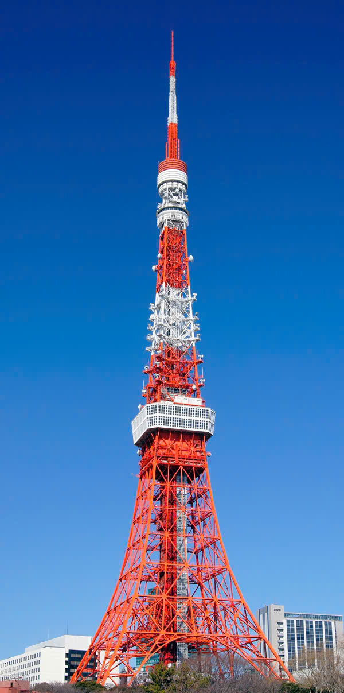
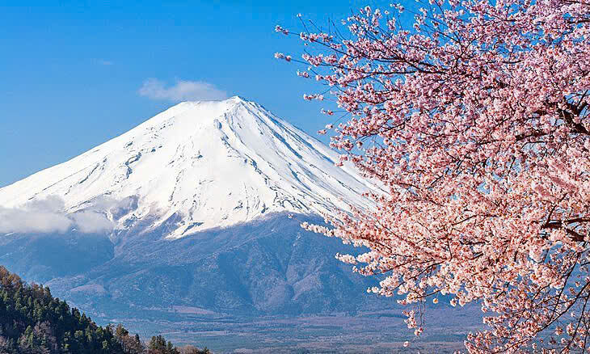
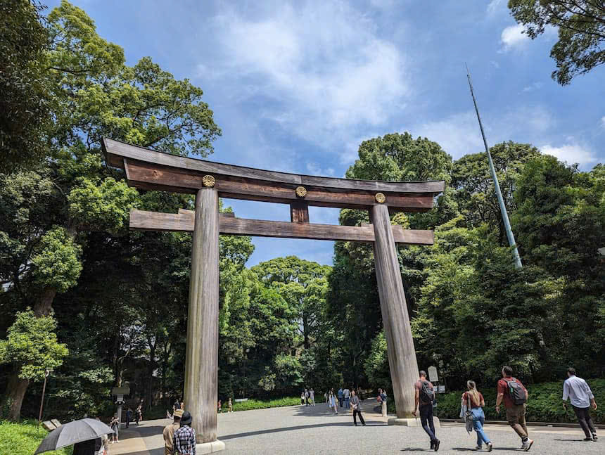
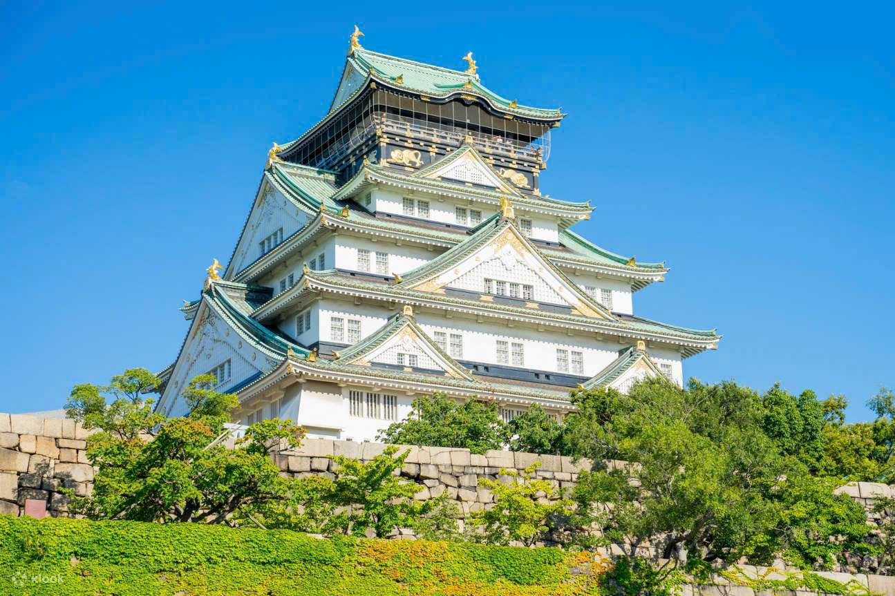
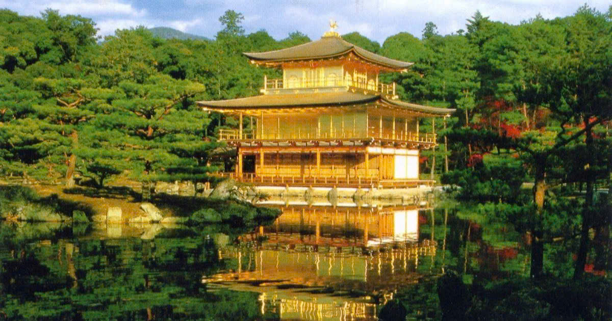
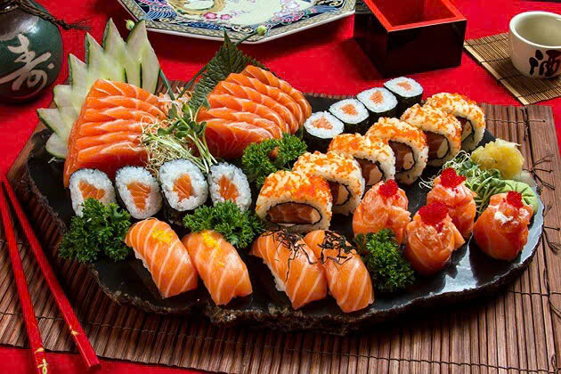
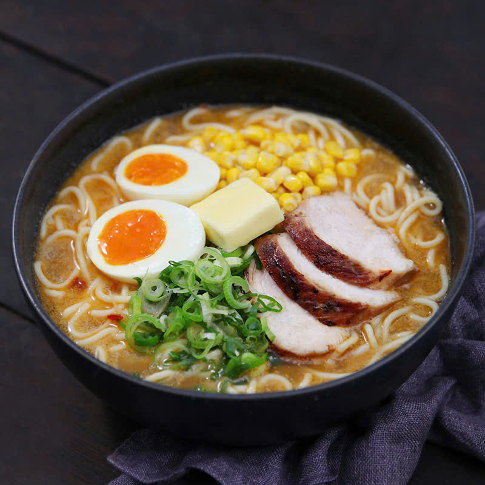
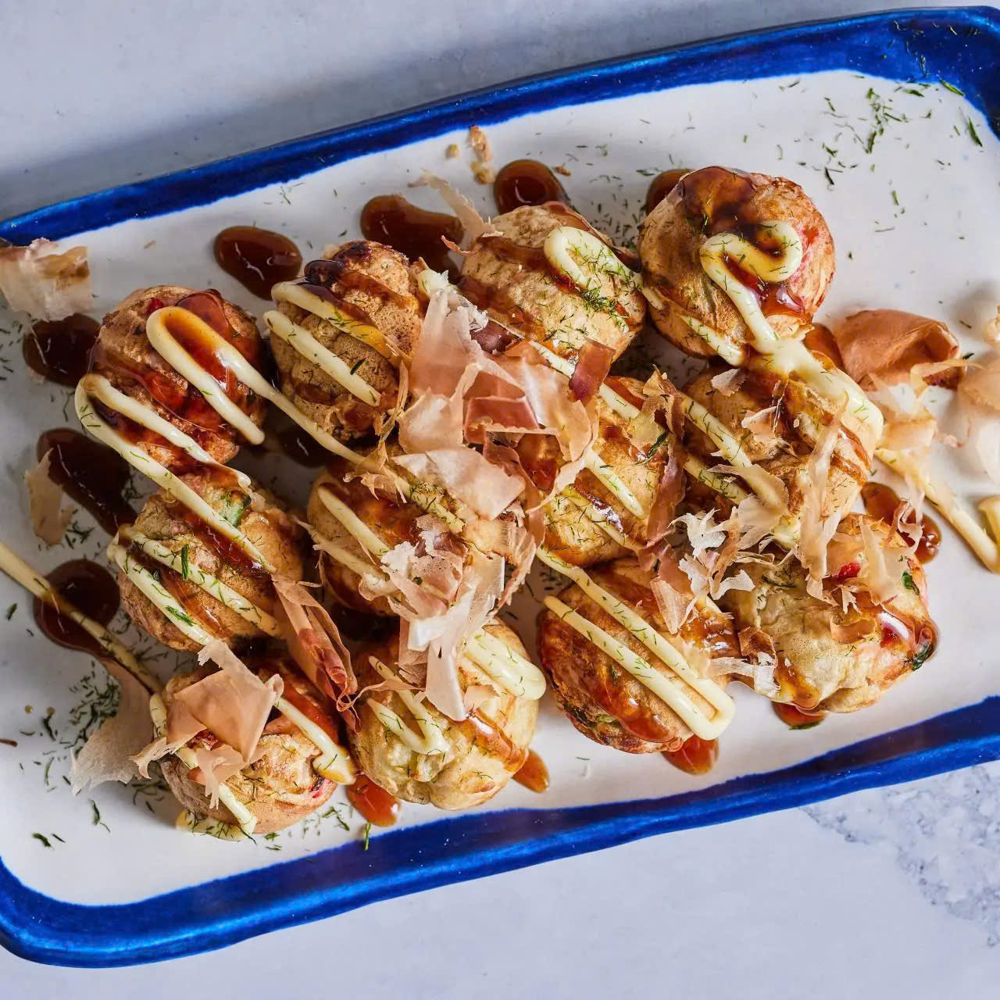

Thông Tin Tour
Giá: 26,500,000 VND
Ngày đi: 20/12/2024
Phương tiện: Máy bay lượt đi + khứ hồi, tàu cao tốc Shinkansen, xe du lịch tại Nhật Bản.
Thời gian: 6 ngày 5 đêm
Giới thiệu: Tour tham quan Tokyo, Kyoto, núi Phú Sĩ và Osaka cùng với những văn hóa ẩm thực đặc sắc của từng vùng xứ sở Hoa Anh Đào.
Lịch Trình Tour
- Ngày 1: Tham quan Tokyo, ghé thăm Tháp Tokyo, đền Meiji, và phố mua sắm Harajuku.
- Ngày 2: Đi tàu đến Núi Phú Sĩ, tham quan làng cổ Oshino Hakkai.
- Ngày 3: Khám phá cố đô Kyoto, tham quan chùa Kinkaku-ji (Chùa Vàng) và rừng tre Arashiyama.
- Ngày 4 - 7: Khám phá Osaka, ghé thăm lâu đài Osaka và phố ăn uống Dotonbori.
Điểm Tham Quan Nổi Bật
-  Tháp Tokyo
-  Núi Phú Sĩ
-  Đền Meiji
-  Lâu đài Osaka
-  Chùa Kinkaku-ji (Chùa Vàng)
Ẩm Thực Đặc Sắc
Tour sẽ giới thiệu đến du khách các món ăn nổi tiếng của Nhật Bản:
-  Sushi & Sashimi: Hải sản tươi ngon với cơm giấm Nhật.
-  Ramen: Mì nước với nước dùng đậm đà.
-  Takoyaki: Bánh bạch tuộc giòn mềm bên ngoài, nóng hổi bên trong.
Phương Tiện Di Chuyển
- Máy bay lượt đi + khứ hồi, tàu cao tốc Shinkansen, xe du lịch tại Nhật Bản.